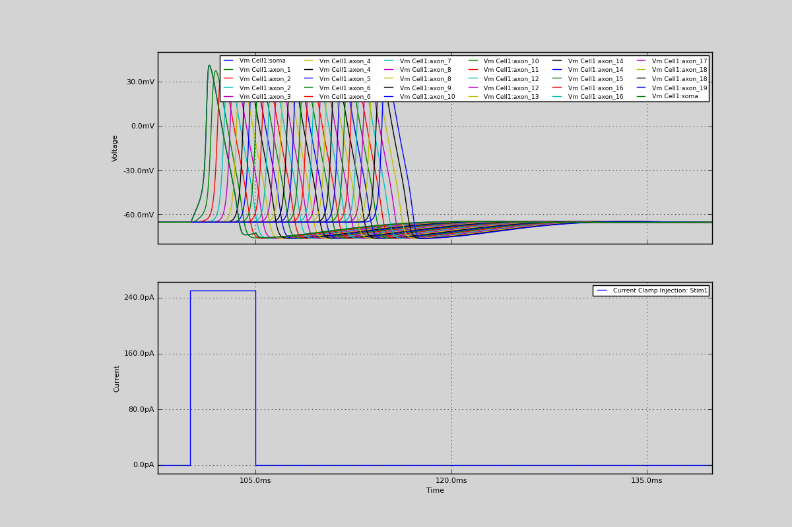

12. Visualising action potential propagation along an axon
Visualising action potential propagation along an axon In this simulation, we create a cell with a long axon. We put HH-channels over its surface and give it a short current injection into the soma. We look at the voltage at various points along the axon, and see it propogate.
Code
from morphforge.stdimports import *
from morphforgecontrib.simulation.channels.hh_style.core.mmleak import StdChlLeak
from morphforgecontrib.simulation.channels.hh_style.core.mmalphabeta import StdChlAlphaBeta
# Create the environment:
env = NEURONEnvironment()
# Create the simulation:
sim = env.Simulation()
# Create a cell:
morph = MorphologyBuilder.get_soma_axon_morph(axon_length=3000.0, axon_radius=0.15, soma_radius=9.0, axon_sections=20)
cell = sim.create_cell(name="Cell1", morphology=morph)
lk_chl = env.Channel(
StdChlLeak,
name="LkChl",
conductance=qty("0.3:mS/cm2"),
reversalpotential=qty("-54.3:mV"),
)
na_state_vars = { "m": {
"alpha":[-4.00, -0.10, -1.00, 40.00, -10.00],
"beta": [4.00, 0.00, 0.00, 65.00, 18.00]},
"h": {
"alpha":[0.07, 0.00, 0.00, 65.00, 20.00] ,
"beta": [1.00, 0.00, 1.00, 35.00, -10.00]}
}
na_chl = env.Channel(
StdChlAlphaBeta,
name="NaChl", ion="na",
equation="m*m*m*h",
conductance=qty("120:mS/cm2"),
reversalpotential=qty("50:mV"),
statevars=na_state_vars,
)
k_state_vars = { "n": {
"alpha":[-0.55, -0.01, -1.0, 55.0, -10.0],
"beta": [0.125, 0, 0, 65, 80]},
}
k_chl = env.Channel(
StdChlAlphaBeta,
name="KChl", ion="k",
equation="n*n*n*n",
conductance=qty("36:mS/cm2"),
reversalpotential=qty("-77:mV"),
statevars=k_state_vars,
)
# Apply the channels uniformly over the cell
cell.apply_channel( lk_chl)
cell.apply_channel( na_chl)
cell.apply_channel( k_chl)
cell.set_passive( PassiveProperty.SpecificCapacitance, qty('1.0:uF/cm2'))
# Create the stimulus and record the injected current:
cc = sim.create_currentclamp(name="Stim1", amp=qty("250:pA"), dur=qty("5:ms"), delay=qty("100:ms"), cell_location=cell.soma)
sim.record(cc, what=StandardTags.Current)
# To record along the axon, we create a set of 'CellLocations', at the distances
# specified (start, stop,
for cell_location in CellLocator.get_locations_at_distances_away_from_dummy(cell=cell, distances=range(9, 3000, 100)):
print " -- ", cell_location.section
print " -- ", cell_location.sectionpos
print " -- ", cell_location.get_3d_position()
# Create a path along the morphology from the centre of the
# Soma
path = MorphPath(cell.soma, cell_location)
print "Distance to Soma Centre:", path.get_length()
sim.record(cell, what=StandardTags.Voltage, cell_location=cell_location, description="Distance Recording at %0.0f (um)"% path.get_length())
# Define what to record:
sim.record(cell, what=StandardTags.Voltage, name="SomaVoltage", cell_location = cell.soma)
# run the simulation
results = sim.run()
# Display the results:
TagViewer([results], timerange=(97.5, 140)*units.ms)
Figures

Download Figure
{kind=link}
Output
No handlers could be found for logger "neurounits"
Openning ScriptFlags
/auto/homes/mh735/hw/NeuroUnits/ext_deps
Loading StdLib file: /auto/homes/mh735/hw/NeuroUnits/src/neurounits/../stdlib/stdlib.eqn
-- <SectionObject: [0.000000, 0.000000, 0.000000, r=9.000000] -> [18.000000, 0.000000, 0.000000, r=9.000000], Length: 18.00, Region:soma, idtag:soma, >
-- 0.5
-- [ 9. 0. 0.]
Distance to Soma Centre: 0.0
-- <SectionObject: [18.000000, 0.000000, 0.000000, r=9.000000] -> [168.000000, 0.000000, 0.000000, r=0.150000], Length: 150.00, Region:axon, idtag:axon_1, >
-- 0.606666666667
-- [ 109. 0. 0.]
Distance to Soma Centre: 100.0
-- <SectionObject: [168.000000, 0.000000, 0.000000, r=0.150000] -> [318.000000, 0.000000, 0.000000, r=0.150000], Length: 150.00, Region:axon, idtag:axon_2, >
-- 0.273333333333
-- [ 209. 0. 0.]
Distance to Soma Centre: 200.0
-- <SectionObject: [168.000000, 0.000000, 0.000000, r=0.150000] -> [318.000000, 0.000000, 0.000000, r=0.150000], Length: 150.00, Region:axon, idtag:axon_2, >
-- 0.94
-- [ 309. 0. 0.]
Distance to Soma Centre: 300.0
-- <SectionObject: [318.000000, 0.000000, 0.000000, r=0.150000] -> [468.000000, 0.000000, 0.000000, r=0.150000], Length: 150.00, Region:axon, idtag:axon_3, >
-- 0.606666666667
-- [ 409. 0. 0.]
Distance to Soma Centre: 400.0
-- <SectionObject: [468.000000, 0.000000, 0.000000, r=0.150000] -> [618.000000, 0.000000, 0.000000, r=0.150000], Length: 150.00, Region:axon, idtag:axon_4, >
-- 0.273333333333
-- [ 509. 0. 0.]
Distance to Soma Centre: 500.0
-- <SectionObject: [468.000000, 0.000000, 0.000000, r=0.150000] -> [618.000000, 0.000000, 0.000000, r=0.150000], Length: 150.00, Region:axon, idtag:axon_4, >
-- 0.94
-- [ 609. 0. 0.]
Distance to Soma Centre: 600.0
-- <SectionObject: [618.000000, 0.000000, 0.000000, r=0.150000] -> [768.000000, 0.000000, 0.000000, r=0.150000], Length: 150.00, Region:axon, idtag:axon_5, >
-- 0.606666666667
-- [ 709. 0. 0.]
Distance to Soma Centre: 700.0
-- <SectionObject: [768.000000, 0.000000, 0.000000, r=0.150000] -> [918.000000, 0.000000, 0.000000, r=0.150000], Length: 150.00, Region:axon, idtag:axon_6, >
-- 0.273333333333
-- [ 809. 0. 0.]
Distance to Soma Centre: 800.0
-- <SectionObject: [768.000000, 0.000000, 0.000000, r=0.150000] -> [918.000000, 0.000000, 0.000000, r=0.150000], Length: 150.00, Region:axon, idtag:axon_6, >
-- 0.94
-- [ 909. 0. 0.]
Distance to Soma Centre: 900.0
-- <SectionObject: [918.000000, 0.000000, 0.000000, r=0.150000] -> [1068.000000, 0.000000, 0.000000, r=0.150000], Length: 150.00, Region:axon, idtag:axon_7, >
-- 0.606666666667
-- [ 1009. 0. 0.]
Distance to Soma Centre: 1000.0
-- <SectionObject: [1068.000000, 0.000000, 0.000000, r=0.150000] -> [1218.000000, 0.000000, 0.000000, r=0.150000], Length: 150.00, Region:axon, idtag:axon_8, >
-- 0.273333333333
-- [ 1109. 0. 0.]
Distance to Soma Centre: 1100.0
-- <SectionObject: [1068.000000, 0.000000, 0.000000, r=0.150000] -> [1218.000000, 0.000000, 0.000000, r=0.150000], Length: 150.00, Region:axon, idtag:axon_8, >
-- 0.94
-- [ 1209. 0. 0.]
Distance to Soma Centre: 1200.0
-- <SectionObject: [1218.000000, 0.000000, 0.000000, r=0.150000] -> [1368.000000, 0.000000, 0.000000, r=0.150000], Length: 150.00, Region:axon, idtag:axon_9, >
-- 0.606666666667
-- [ 1309. 0. 0.]
Distance to Soma Centre: 1300.0
-- <SectionObject: [1368.000000, 0.000000, 0.000000, r=0.150000] -> [1518.000000, 0.000000, 0.000000, r=0.150000], Length: 150.00, Region:axon, idtag:axon_10, >
-- 0.273333333333
-- [ 1409. 0. 0.]
Distance to Soma Centre: 1400.0
-- <SectionObject: [1368.000000, 0.000000, 0.000000, r=0.150000] -> [1518.000000, 0.000000, 0.000000, r=0.150000], Length: 150.00, Region:axon, idtag:axon_10, >
-- 0.94
-- [ 1509. 0. 0.]
Distance to Soma Centre: 1500.0
-- <SectionObject: [1518.000000, 0.000000, 0.000000, r=0.150000] -> [1668.000000, 0.000000, 0.000000, r=0.150000], Length: 150.00, Region:axon, idtag:axon_11, >
-- 0.606666666667
-- [ 1609. 0. 02013-10-19 15:40:31,010 - morphforge.core.logmgr - INFO - Logger Started OK
2013-10-19 15:40:31,010 - DISABLEDLOGGING - INFO - _run_spawn() [Pickling Sim]
No handlers could be found for logger "neurounits"
2013-10-19 15:40:32,671 - morphforge.core.logmgr - INFO - Logger Started OK
2013-10-19 15:40:32,671 - DISABLEDLOGGING - INFO - Ensuring Modfile is built
NEURON -- Release 7.1 (359:7f113b76a94b) 2009-10-26
Duke, Yale, and the BlueBrain Project -- Copyright 1984-2008
See http://www.neuron.yale.edu/credits.html
Openning ScriptFlags
/auto/homes/mh735/hw/NeuroUnits/ext_deps
Loading StdLib file: /auto/homes/mh735/hw/NeuroUnits/src/neurounits/../stdlib/stdlib.eqn
Loading Bundle from: /local/scratch/mh735/tmp/morphforge/tmp/simulationresults/ec/ec41fa63d3bbd2677776c59258d6466b.bundle (24k) : 0.795 seconds
set(['conductance', 'reversalpotential'])
__dict__ {'mm_neuronNumber': None, 'cachedNeuronSuffix': None, 'reversalpotential': array(-54.3) * mV, '_name': 'LkChl', '_simulation': None, 'conductance': array(3.0) * s**3*A**2/(kg*m**4)}
loading membrane mechanisms from /local/scratch/mh735/tmp/morphforge/tmp/modout/mod_30c2975a245542537b8157858ae7cb90.so
loading membrane mechanisms from /local/scratch/mh735/tmp/morphforge/tmp/modout/mod_4fe96bbe338ca63bb55bbd7ff98cced3.so
loading membrane mechanisms from /local/scratch/mh735/tmp/morphforge/tmp/modout/mod_13b2f262c38556f5cc10f5fa49fb4fa2.so
1
1
0.01
0
1
50000
1
50000
1
50000
1
50000
1
50000
1
50000
1
50000
1
50000
1
50000
1
50000
1
50000
1
50000
1
50000
1
50000
1
50000
1
50000
1
50000
1
50000
1
50000
1
50000
1
50000
1
50000
1
50000
1
50000
1
50000
1
50000
1
50000
1
50000
1
50000
1
50000
1
50000
1
Running Simulation
Time for Extracting Data: (31 records) 0.014641046524
Running simulation : 0.838 seconds
Post-processing : 0.026 seconds
Entire load-run-save time : 1.659 seconds
Suceeded
.]
Distance to Soma Centre: 1600.0
-- <SectionObject: [1668.000000, 0.000000, 0.000000, r=0.150000] -> [1818.000000, 0.000000, 0.000000, r=0.150000], Length: 150.00, Region:axon, idtag:axon_12, >
-- 0.273333333333
-- [ 1709. 0. 0.]
Distance to Soma Centre: 1700.0
-- <SectionObject: [1668.000000, 0.000000, 0.000000, r=0.150000] -> [1818.000000, 0.000000, 0.000000, r=0.150000], Length: 150.00, Region:axon, idtag:axon_12, >
-- 0.94
-- [ 1809. 0. 0.]
Distance to Soma Centre: 1800.0
-- <SectionObject: [1818.000000, 0.000000, 0.000000, r=0.150000] -> [1968.000000, 0.000000, 0.000000, r=0.150000], Length: 150.00, Region:axon, idtag:axon_13, >
-- 0.606666666667
-- [ 1909. 0. 0.]
Distance to Soma Centre: 1900.0
-- <SectionObject: [1968.000000, 0.000000, 0.000000, r=0.150000] -> [2118.000000, 0.000000, 0.000000, r=0.150000], Length: 150.00, Region:axon, idtag:axon_14, >
-- 0.273333333333
-- [ 2009. 0. 0.]
Distance to Soma Centre: 2000.0
-- <SectionObject: [1968.000000, 0.000000, 0.000000, r=0.150000] -> [2118.000000, 0.000000, 0.000000, r=0.150000], Length: 150.00, Region:axon, idtag:axon_14, >
-- 0.94
-- [ 2109. 0. 0.]
Distance to Soma Centre: 2100.0
-- <SectionObject: [2118.000000, 0.000000, 0.000000, r=0.150000] -> [2268.000000, 0.000000, 0.000000, r=0.150000], Length: 150.00, Region:axon, idtag:axon_15, >
-- 0.606666666667
-- [ 2209. 0. 0.]
Distance to Soma Centre: 2200.0
-- <SectionObject: [2268.000000, 0.000000, 0.000000, r=0.150000] -> [2418.000000, 0.000000, 0.000000, r=0.150000], Length: 150.00, Region:axon, idtag:axon_16, >
-- 0.273333333333
-- [ 2309. 0. 0.]
Distance to Soma Centre: 2300.0
-- <SectionObject: [2268.000000, 0.000000, 0.000000, r=0.150000] -> [2418.000000, 0.000000, 0.000000, r=0.150000], Length: 150.00, Region:axon, idtag:axon_16, >
-- 0.94
-- [ 2409. 0. 0.]
Distance to Soma Centre: 2400.0
-- <SectionObject: [2418.000000, 0.000000, 0.000000, r=0.150000] -> [2568.000000, 0.000000, 0.000000, r=0.150000], Length: 150.00, Region:axon, idtag:axon_17, >
-- 0.606666666667
-- [ 2509. 0. 0.]
Distance to Soma Centre: 2500.0
-- <SectionObject: [2568.000000, 0.000000, 0.000000, r=0.150000] -> [2718.000000, 0.000000, 0.000000, r=0.150000], Length: 150.00, Region:axon, idtag:axon_18, >
-- 0.273333333333
-- [ 2609. 0. 0.]
Distance to Soma Centre: 2600.0
-- <SectionObject: [2568.000000, 0.000000, 0.000000, r=0.150000] -> [2718.000000, 0.000000, 0.000000, r=0.150000], Length: 150.00, Region:axon, idtag:axon_18, >
-- 0.94
-- [ 2709. 0. 0.]
Distance to Soma Centre: 2700.0
-- <SectionObject: [2718.000000, 0.000000, 0.000000, r=0.150000] -> [2868.000000, 0.000000, 0.000000, r=0.150000], Length: 150.00, Region:axon, idtag:axon_19, >
-- 0.606666666667
-- [ 2809. 0. 0.]
Distance to Soma Centre: 2800.0
PlotMnager:Saving _output/figures/singlecell_simulation060/{png,svg}/fig000_Autosave_figure_1.{png,svg}